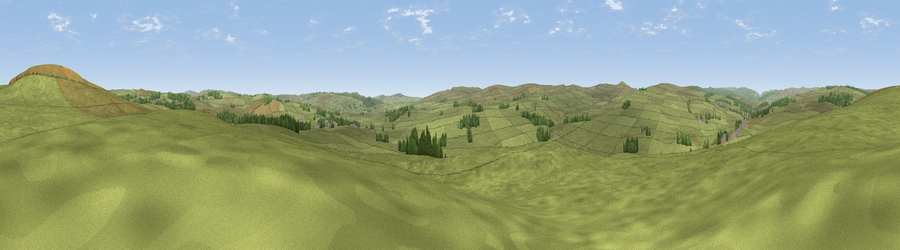

Viewpoint near Otterburn
#28645 in England · top 66% of its area beats it · near OtterburnThe view, rendered

A 360° render of this exact spot computed from the terrain model, tree cover and land cover — summer colours, afternoon light, calibrated against photographs of famous viewpoints. Real trees, hedges and buildings will differ in detail.
The panorama
Grey silhouette: terrain skyline in each direction (720 bearings, Earth curvature and refraction included). Dashed green: skyline with trees (+15 m) and buildings (+8 m) as obstacles. Blue strip: how far the ground is visible on each bearing.
Where the view opens
Wedge length = distance to the farthest visible ground on that bearing (vegetation-aware). Rings at 10, 25 and 50 km.
What fills the view
96% grassland · 4% woodland
Angular shares of the visible panorama (visual magnitude), not map area. Landscape diversity 0.08 (0–1 Shannon).
Key numbers
More beautiful places nearby
The staircase of upgrades: each row has a higher view potential than everything closer. Driving times are estimates from straight-line distance, calibrated against real road routing — check an actual route before setting out.
| Place | Direction | Drive | Score |
|---|---|---|---|
| Viewpoint near Otterburn | NNE · 1 km | ~3 min | 55.8 |
| Viewpoint near Rochester | NNE · 4 km | ~10 min | 56.1 |
| Viewpoint near Otterburn | SSW · 5 km | ~11 min | 59.3 |
| Padon Hill | WSW · 5 km | ~12 min | 72.6 |
| Cold Law | NNE · 10 km | ~19 min | 76.1 |
| Darden Rigg | E · 12 km | ~22 min | 77.0 |
| Ellis Crag | WNW · 14 km | ~25 min | 77.2 |
| Viewpoint near Hepple | ENE · 15 km | ~27 min | 82.4 |
55.24744, -2.20484 · source: screening · position refined by local search. Computed location — check access rights before visiting.